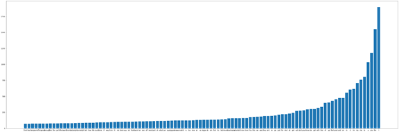
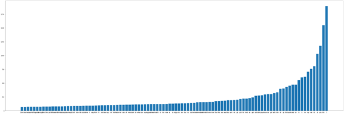

היי רציתי לשאול אם הגרף שיצא לי זאת תוצאה קבילה (יעני, מבחינת הגרפיקה, והגודל של הטקסט  )
)
תקציר


היי רציתי לשאול אם הגרף שיצא לי זאת תוצאה קבילה (יעני, מבחינת הגרפיקה, והגודל של הטקסט )

סהכ נראה תוצאה הגיונית למה שלא חהיה כביל ?
כי אי אפשר לקרוא מה הולך שם
תבחן את המספרים אצלך הם הם נראים לך הגיוניים לא קטנים מדיי אז זה כנראה סבבה
הפלט שלי:

ולגבי שאלת הבונוס הרשיתי לעצמי להכניס רק את הטופ 25
לי זה נראה הגיוני מאוד הצורה של הגרף שלך מאוד דומה לשלי.
היי,
אנסה להרחיב על התשובות שפה.
התוצאה, לפי מה שאני שאני רואה אצלך, היא לכאורה טובה כאשר שופטים את הצורה הכללית של הגרף.
אנחנו לא יכולים עם זאת לקרוא מה קורה בגרף שלך, והסיבה היא שכאשר אתה מציג את הגרף שלך, גודל הגרף שנוצר מתבסס על ערכי ברירת מחדל של matplotlib.
תוכל לקרוא כאן לבצע קסטומיזציה (שינוי צבע, צורה, פונט, גודל פונטי ועוד) של הגרף שלך.
חשוב להדגיש - מה שיוצג בחלון ה-Jupyter יהיה התאמה של הגודל האמיתי של הגרף לתצוגת המחברת. תוכל לשמור את הגרף לקובץ נפרד בכדי לראות את סדרי הגודל האמיתיים.
מחזק את דברייך
אך אין צורך לשמור את הגרף, דאבל קליק על הגרף בתצוגה של jupyter תאפשר לעיין בו בצורה נוחה
(מזל שיש לי נטייה ללחוץ דאבל קליק על כל מה שזז  )
)
יש מקום עם תוצאות להשוואה?
{kind=link}